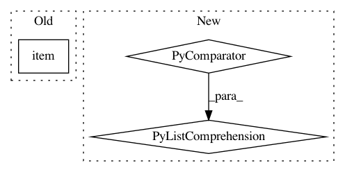

d01864a6b840a6ca5da581c5e5fe90b74da8d2b8,pycox/callbacks.py,MonitorCoxLoss,_run_dataloader,#MonitorCoxLoss#,581
Before Change
// batch_loss = [self.model.compute_loss(g_case, gc).item() for gc in g_control]
with torch.no_grad():
batch_loss, _, _ = self.model.compute_batch(case, control)
loss.append(np.mean(batch_loss.item()))
self.model.g.train()
return np.mean(loss)
After Change
g_case, g_control = self.model.compute_g_case_control(case, control)
// self.g_case_control = (g_case, g_control)
iters = np.arange(0, len(control)+self.n_control, self.n_control)
g_control = [g_control[s:e] for s, e in zip(iters[:-1], iters[1:])]
batch_loss = [self.model.compute_loss(g_case, gc).item() for gc in g_control]
loss.append(np.mean(batch_loss))
self.model.g.train()
In pattern: SUPERPATTERN
Frequency: 3
Non-data size: 3
Instances
Project Name: havakv/pycox
Commit Name: d01864a6b840a6ca5da581c5e5fe90b74da8d2b8
Time: 2018-05-05
Author: havard@DN0a22c81b.SUNet
File Name: pycox/callbacks.py
Class Name: MonitorCoxLoss
Method Name: _run_dataloader
Project Name: arraiy/torchgeometry
Commit Name: 766bd71d6cca7313988b02784be6d56834e8c744
Time: 2020-10-19
Author: sj8716643@126.com
File Name: kornia/filters/kernels.py
Class Name:
Method Name: get_motion_kernel2d
Project Name: rusty1s/pytorch_geometric
Commit Name: 2578ba8b844bdceb9333fa73a909b2aa9436f867
Time: 2020-06-30
Author: luca.cavallery@gmail.com
File Name: examples/pna.py
Class Name:
Method Name: train